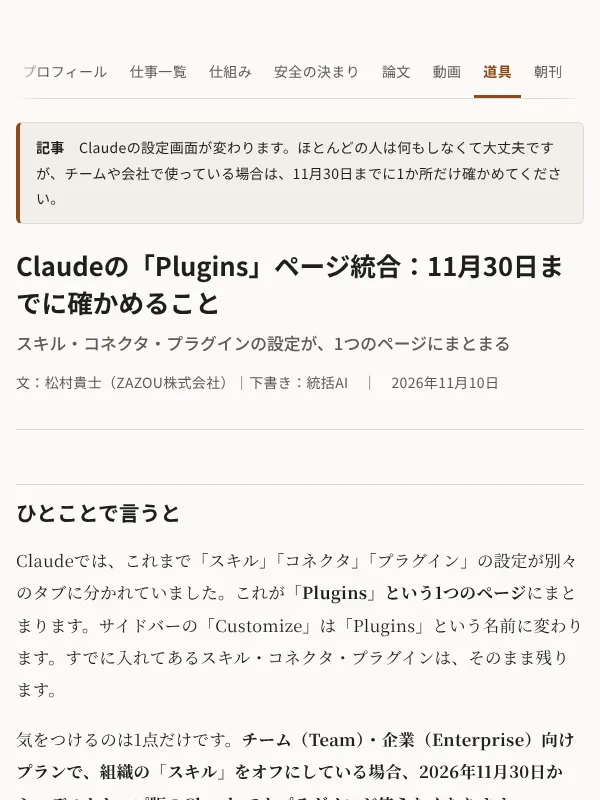
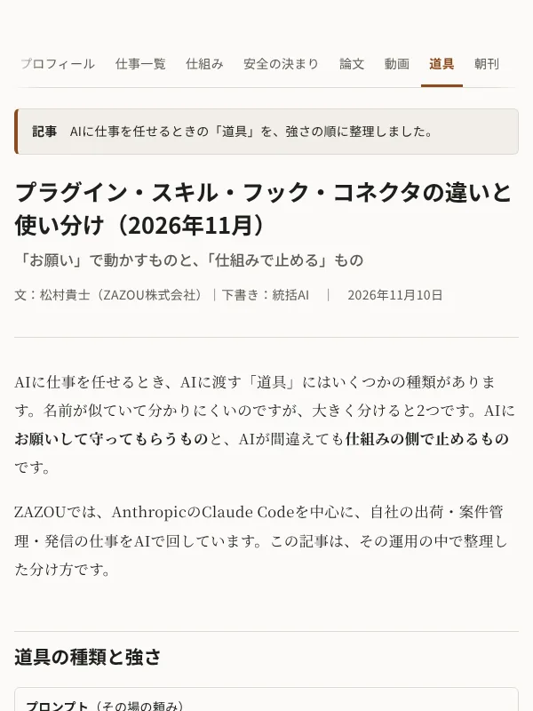
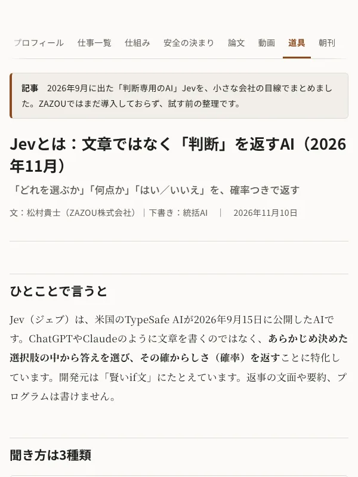
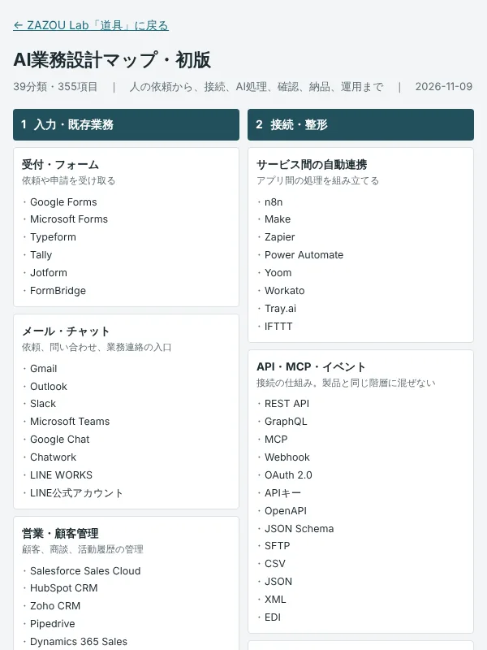

図面
図面 見積
見積 業務改善
業務改善 Web
Web

ポートフォリオ｜ZAZOU Lab
AIで、仕事の流れをつくる。
業務改善エンジニア（DXエンジニア） 松村貴士
ラボは、ZAZOUの実績と、試作・研究の途中経過を公開している場所です。論文には中間発表の段階のものも含みます。
垂直型AIエージェント ── 仕事の中身を、深く理解するAI。 ZAZOU AI Works
1つの何でも屋のAIではなく、仕事ごとに「手順（スキル）・道具・ナレッジ」を縦に積み、統括AIが束ねて動かしています。直したことはその仕事のナレッジに書き足すので、使うほど仕事に合っていきます。AIが推測で書かないよう事実をまとめた表と照らし合わせ、別のAIによる二重チェックと人の最終確認を通してから外に出しています。
Skillsできること
仕事一覧と同じ分け方で並べています。「仕事の例」から、それぞれの見本に移れます。
- 見積・図面
- 図面を読んで寸法・材質・溶接箇所を拾い出し、材料取り・加工工数・積算から見積書まで仕上げます。電気設備図面の拾い出しと積算も。パナソニックで約15年、機構設計として図面を描き、読んできた経験を生かします（CATIA・NX・SolidWorks・MICRO CADAM Helix）。図面をAIが読んで見積の下書きを作るソフトも自作しています（オンラインのAI・オフラインのAI（準備中）・AIなしで弊社の担当が読む、から選べます）。 仕事の例
- 製品の企画・設計
- パナソニックで、チューナの機構設計、縦型洗濯機の機種開発、ロボット掃除機の駆動部の開発に携わりました。3D CADでの設計から試作まで。
- Web制作
- HTML・GitHub Pagesで、企画から制作・公開まで一人で。スマホ対応、検索向けの説明文の設定、表示の速さの改善まで行います。 仕事の例
- 資料作成
- 企画提案書、経営会議資料、商談資料の作り直しなど。構成・図解・デザインを整えます。PowerPoint・Googleスライド・PDF。 仕事の例
- 特許・技術資料
- 発明の内容を伺い、課題・解決の手段・効果を整理して、技術資料や図解にまとめます。構造物の挿絵をこちらで用意し、お客様に鉛筆で加筆していただいて特許の図面に載せるなど、お客様が制作しやすい形でサポートします。パナソニックでは機構設計を担当し、発明者として複数の特許を取得しました。 仕事の例
- リサーチ
- 一次情報（公式サイト・公募要領など）で確かめ、出典を添えてまとめます。 仕事の例
- マニュアル
- 月次締めなどの手順を、誰がやっても同じようにできる形に書きます。 仕事の例
- 業務改善（スプレッドシート・GAS）
- 期限の通知、週次の集計、入力チェックなど、毎週の手作業を仕組みにします。注文データを送り状の形式に変えるツールなど、毎日使っている道具も作っています。 仕事の例
- AI活用（誤りを防ぐ仕組みつき）
- 業務の棚卸しから導入の提案、初月の結果報告まで。 仕事の例
- AI開発
- 仕事ごとに手順・道具・ナレッジを積み、統括AIが束ねて動かす体制を、毎日の業務で動かしています。AIニュース番組（SOCRA）の制作から投稿までの自動化も。 仕事の例
- ライティング
- 調べて書く記事。AI・時事、マーケティング・EC、社会・メディアなど。 仕事の例
- EC・商品企画
- Amazon・Yahoo!ショッピング・BASEでの販売。Makuakeでは企画から撮影・文章・広告・発送まで一人で担当。 仕事の例
Career経歴
- 2024年〜
- 自社の仕事をAIで仕組み化。AI・DX支援（ZAZOU AI Works）
- 2020年〜
- ZAZOU株式会社 設立・代表取締役（EC事業：家電・日用品・ペットフードの販売と輸出入）
- 2014〜2020年
- パナソニック：ロボット掃除機の開発（駆動部）
- 2011〜2013年
- パナソニック：台湾拠点で縦型洗濯機の機種開発リーダー、衣類用新規商品の開発
- 2005〜2011年
- パナソニックエレクトロニックデバイス：チューナの機構設計
- 2000〜2005年
- 有限会社松村建工：家業の建設業（施工・資材手配）
使えるツール：Word、Excel、PowerPoint、Googleドキュメント・スプレッドシート（GAS）、freee、Canva、Zoom、ChatGPT・Claude／3D CAD：CATIA、NX、SolidWorks（CATIA V5 スペシャリスト資格）
Samples仕事一覧
見本では、会社名・人名・数字を変更しています。
見積・図面
 図面見積アプリ：図面PDFから見積書の下書きまでWeb金属加工の図面をAIが読み、見積の下書きをExcelで。自作の見本図面10枚で項目の正解率は約99%（90項目中89）。読み違えやすい所は「要確認」に出す。オンラインのAI・オフラインのAI（準備中）・AIなし（弊社の担当が読む）から選べる。
図面見積アプリ：図面PDFから見積書の下書きまでWeb金属加工の図面をAIが読み、見積の下書きをExcelで。自作の見本図面10枚で項目の正解率は約99%（90項目中89）。読み違えやすい所は「要確認」に出す。オンラインのAI・オフラインのAI（準備中）・AIなし（弊社の担当が読む）から選べる。- 見積書作成：図面から見積書までの流れ（アルミ溶接フレーム）PDF · 7p寸法・材質・溶接箇所の拾い出し、材料取り、加工工数、積算、見積書、読み違いを防ぐ確認リストまで。
- 電気設備図面の積算：私の進め方PDF · 5pPDF図面から回路分け・記号の拾い出し・ケーブル量の算出まで。2通りの数え方による二重チェックと、確認事項の書き出し。
Web制作
 ホームページの見本20業種：町工場から介護タクシーまでWeb · 20サイト町工場・工務店・食堂・美容室・整体院・直売所・ペット・士業・学習塾・宿・喫茶店・花屋・整備工場・写真館・不動産・ヨガ・パン屋・設計事務所・酒蔵・介護タクシー。業種ごとに色・書体・構成を変えた、スマホ対応の見本（会社・住所・電話は架空）。
ホームページの見本20業種：町工場から介護タクシーまでWeb · 20サイト町工場・工務店・食堂・美容室・整体院・直売所・ペット・士業・学習塾・宿・喫茶店・花屋・整備工場・写真館・不動産・ヨガ・パン屋・設計事務所・酒蔵・介護タクシー。業種ごとに色・書体・構成を変えた、スマホ対応の見本（会社・住所・電話は架空）。- 団体サイトの制作Web ↗団体のWebサイトを企画から制作・公開まで一人で担当（HTML・GitHub Pages、スマホ対応、検索向けの説明文の設定）。
資料作成
- 企画提案書：Webマーケティング支援PDF · 8p自社ECの新規流入を増やすための企画提案書。
- 経営会議資料：月次の予実・KPIPDF · 8pKPIの推移、予算と実績、論点と次の打ち手。
- 商談資料ブラッシュアップの例PDF · 8p内容はそのままに、構成・図解・デザインを整えた改善前後。
リサーチ
特許・技術資料
マニュアル
業務改善（スプレッドシート・GAS）
- 進捗管理 × スプレッドシート・GASPDF · 10p期限の通知・週次レポート・入力チェックを仕組みにする設計。
- バックオフィス 初月レポートPDF · 10p業務の棚卸しから改善の結果までを1か月でまとめた報告書。
- フォーム → 集計 → Gmail送信（GAS）PDF · 10p送信前に下書きで確認する、誤送信しない作り。個人情報を扱わない設計と自動テストつき。
- ヤマトB2 送り状変換ツールWeb ↗注文データをヤマト運輸「B2クラウド」の取り込み形式に変換するツール。自社の出荷で使用中。
AI活用（誤りを防ぐ仕組みつき）
- AI導入とセキュリティ：自社でやっている対策と、お手伝いできることスライド · 10枚AIを使い始めると増える危険、情報セキュリティ基本方針とAIを使うときの決まり、SECURITY ACTION「二つ星」の自己宣言、お手伝いできること、進め方と料金（税別）。
- Claude導入の提案＆初月レポートPDF · 8p業務の棚卸しから導入提案、初月の結果報告まで。
- 生成AI導入 現状診断レポート（製造業）PDF · 8p設計・品質部門を対象にした導入前の現状診断。
- 生成AIの業務導入 設計書（税理士事務所向け）PDF · 9p税理士事務所で生成AIを使うときの、業務の流れと仕組みの設計書。
- ブログ月間サマリーの自動作成・検証PDF · 10p記事にない固有名詞・数字・日付を機械で照合して差し戻す。承認は人。
AI開発
ライティング
- 記事：階層型AIエージェントの運用PDF · 8p自社の実際の運用をもとに、誤りを防ぐ4つの関門を紹介する記事。
- note：調査記事24本note.com ↗AI・時事、マーケティング・EC、社会・メディアなどを調べて書いた記事。
EC（広告運用・在庫管理・価格設定・API）・商品企画
- 実績：EC出荷作業の自動化（実画面つき・2時間→10分、ボタンを押さずに伝票印刷まで）スライド · 10枚自社EC（Amazon・Yahoo!ショッピング・BASE）の送り状づくりを、約2時間から約10分に。実際の画面で手順を紹介し、ナレッジとデスクトップアプリで、ボタンを押さずに伝票印刷までつなげる構成も説明します。
- ECのAPI 取得方法ガイド：Amazon SP-API・Amazon広告API・Yahoo!ショッピング・BASEPDF · 12p4つのAPIの取り方を、申し込みに要るもの・画面の順の手順・発行される鍵の意味と保管・つまずきやすい所まで。公式文書で確かめた手順と比較表。
- Amazon広告運用の進め方：スポンサープロダクトを中心にPDF · 9p指標の意味、オートからマニュアルへの育て方、利益から出す広告費の上限、週次の見直し、在庫切れ・カートと広告の関係。
- EC価格設定の考え方：相場・利益・モール間の統一PDF · 8p最低価格の式、3モールの手数料、相場の比べ方、モール間で価格をそろえる考え方、サイズ違いの価格表と値上げの進め方。
- EC在庫管理：3モールの在庫を1つの台帳で回すPDF · 8p台帳の列の設計、発注点と安全在庫の計算、売り切れ前の通知、手作業からAPIへの段階、棚卸し。
- EC商品の運用：毎日・毎週・毎月のやることPDF · 8p毎日・毎週・毎月のチェックリスト、商品ページの改善、レビューと問い合わせ対応の型。
- 商品切り替えの手順：旧商品から新商品へ、売上を落とさずにPDF · 8p在庫の消化計画、切り替え日、商品ページの扱い、告知と当日のチェックリスト、よくある失敗。
- Makuake：全身シャンプーバーmakuake.com ↗ポーランドのブランドの日本初展開。応援購入総額424,930円（達成率141%）。企画・撮影・動画編集・文章・広告運用・発送を一人で。
趣味（ホビー）
System自社で運用している仕組み
人が頼み、統括AIが仕事ごとに「手順（スキル）・道具・ナレッジ」を束ねて動かし、最後は人が確かめます。送信・公開など元に戻せない操作は人が行います。
全体図：頼む → 束ねる → 確かめる → 届ける

図は左から右へ読みます。下の「部分ごとの図解」で、①〜⑧の順に1か所ずつ説明します。言葉の意味は ZAZOU AI Works の用語集 にあります。
業界の最前線毎朝更新
AIエージェントとAI業界の動きを、統括AIが毎朝読んで要約し、自社の運用と照らし合わせています。新しい順に並べています。
- AIに仕事を引き継ぐと、前の経緯から「まだ有効な要件」を拾えない：引き継ぎ評価ReqMemBenchで、完全に納品できた割合は平均4.95%研究・11月10日
- 企業のAI支出の伸びが止まり気味、8〜9月のトークン支出は2か月合計で1.5%増（Ramp調べ）。価格の引き下げと安いモデルへの切り替えが背景企業の動き・11月10日
- Meta、1日中くり返す仕事向けの軽量モデル「Muse Ember」を公開、入力100万トークンあたり10セント製品・サービス・11月10日
- Medium、書く画面にAIの助っ人を入れた新アプリ「TK」を公開、AIをどう使ったかを記す欄も用意製品・サービス・11月10日
- OpenAI、脆弱性調査用の「GPT-6 Cyber」を公開、許可された範囲を外れる率は未指示でも0.07%と報告製品・サービス・11月9日
朝刊をすべて見る ／ 安全に関わる最近の論文 ／ 新しい道具の記事（道具タブ）
部分ごとの図解
①入口：頼み方は4つ、受けるのは1人
どこから頼んでも、受けるのは統括AIだけです。窓口を1つにしておくと、「誰に頼んだか」「どこまで進んだか」が散らばりません。統括AIは依頼を読んで仕事の種類を見分け、その仕事のスキル・道具・ナレッジを呼び出します。
②関門：外に出る前に、必ずここを通る
- レベル0（5つの決まり）送信・応募・お金・契約・削除・公開は人が行う／鍵やパスワードを書かない／経歴・実績を作り話にしない／他社の文章・画像をそのまま使わない／仕組みを変える前に人のOKをもらう。
- 事実と照らし合わせる経歴や実績は「事実シート」にあることだけを書きます。求人・制度・会社のことは、その場で開いた公式ページで確かめ、開けなければ「未確認」と書きます。
- 別のAIで二重チェック外に出す文面は、作ったAIとは別の会社のAIが、事実・誤字・答え漏れを点検します。
- 元に戻せない操作は人が押すAIは下書きと記録まで。ボタンは人が押します。
くわしい決まりは 安全の決まり タブにあります。
③枝1：ほかのAIに頼む（得意なところだけ）
同じAIは、自分の書いたものの誤りに気づきにくいことがあります。そこで、書くAIと読むAIを別の会社のものに分けています。ほかの会社のAIには、外に出す前の成果物だけを見せ、お客様の個人情報は送りません。画像には文字を描かせず、あとから重ねます。
④枝2：スキルで動かす（仕事ごとに、縦に深く）
EC出荷
- スキル
- 出荷・出荷通知（締切14時、店ごとの決まり）
- 道具
- 出荷アプリ・ブラウザ拡張・B2クラウド
- ナレッジ
- 店ごとのファイルの形・品名の略し方
- 人
- 赤い印を確かめて発行
応募・営業
- スキル
- 応募文・入力フォーム・メール確認・新着の巡回・面談の段取り
- 道具
- Gmail・ボード・ブラウザ拡張
- ナレッジ
- 事実シート（経歴・実績）・決定ログ
- 人
- 読んで送信
朝刊・発信
- スキル
- 記事の選び方・出典の付け方（スキル化中）
- 道具
- ページ生成・GitHub Pages・動画づくり
- ナレッジ
- 過去の朝刊・いまの運用
- 人
- 内容を確かめる
資料・サイト
- スキル
- ほかの会社のAIへの頼み方・報告の決まり
- 道具
- Gemini（画像）・GPT（講評）・GitHub Pages
- ナレッジ
- 書き方の決まり・過去の直し
- 人
- 確かめて公開
毎日の数字
- スキル
- トークン台帳の記録
- 道具
- 注文通知のメール・スプレッドシート
- ナレッジ
- 数え方の決まり（決定ログ）
- 人
- 報告を見て判断
スキルは、仕事ごとの手順書です。仕事の名前（例：「今日の出荷」）に合うと、AIがその手順書をまるごと読んで、そのとおりに動きます。1つの何でも屋を作るのではなく、仕事ごとに「手順・道具・ナレッジ」を縦に積みます（垂直型AIエージェント）。新しい仕事は列を1本足して始め、直されたことはその列に書き足します。
⑤枝3：外部サービスを操作する（コネクタとブラウザ拡張）
コネクタがあるサービスは、AIが直接つながります。コネクタがないサービス（店の管理画面など）は、ブラウザ拡張に指示文を渡して操作させます。指示文は出荷アプリやボードが作るので、人は貼り付けるだけです。どのつなぎ方でも、最後のボタンは人が押します。
⑥枝4：外部APIを呼ぶ（画像・声・動画）
APIは、ほかのサービスの機能をプログラムから呼び出す窓口です。画像は人が見て選び、ロゴや実在の商品は描かせません。動画は、読みの心配な表記と音量・長さを点検してから公開します。店のAPIは準備中で、いまはファイルとブラウザ拡張で動かしています。
⑦ナレッジ：会話の外に置く記憶
AIは、会話が長くなると古い決定を忘れます。そこで、会話ではなく記録を「正」にしました。決めたことはその場で書き、毎日、記録と現実のずれを探し、外に出す文面は記録と照らし合わせます。会話の記憶を持たない新しいAIに記録だけを渡す試験では、10問すべてに根拠付きで正答しました。置き場所はGoogleスプレッドシートで、手順はスキルへ順に移しています。
⑧1日の流れ：定時作業と人の出番
- 朝刊と動画づくりAIエージェントの最新の記事を選んで要約し、今の運用と比べます。AI業界のニュース3本と、動画「SOCRA」も作ります。AI
- 毎朝の注文件数前日14時からの注文を、店ごとに数えて報告します。AI
- 朝刊・動画の公開統括AIが中身を確かめてから公開します。AI
- メール確認・求人の新着チェック返信の下書きと新しい案件を、ボードのカードにします。AI人：読んで送信
- 注文の締切 → 出荷出荷アプリで送り状と出荷通知の指示文を作ります。AI人：発行・梱包・通知の確認
- トークン台帳その日のAIの使用額を、仕事ごとに記録します。AI
毎日くり返す仕事は、時刻を決めて自動で始めます。人が見るのは、朝の報告と、ボードに並んだ「読んで送る」ものだけです。 統括AI（先輩）の朝刊を見る
実際の画面

資料
全体図（大きな図） ／ AI業務設計マップ ／ 用語集（AI Works） ／ 見本：Googleの表とメールで動く小さな自動化（GAS） ／ 論文：記憶の欠落とハルシネーションへの対処 ／ 論文：外部脳としての記録の運用
過去の構成（アーカイブ）
いまの構成に変わる前の資料です。経緯をたどれるように残しています。
当時の画面を見る（オフィス画面・担当ごとの机）


Securityセキュリティ
AIに仕事を任せるほど、だまされる・権限を越える・情報が漏れる危険も増えます。私たちがAIを使うときに守っている決まりと、その考え方に関わる最近の論文を紹介します。
AIを使うときに守っていること
- 外に出す・お金・契約・削除は人が決めるAIに任せるのは下書きと記録までです。送信・公開・支払い・契約・削除のように元に戻せない操作は、人が確かめてから行います。
- 確かめた事実だけを使い、推測で書かない経歴・実績・数字は、確かめて表にまとめた事実だけを使います。表にないことは書かないか、「未確認」と明記します。
- 公式の情報で確かめる制度・料金・会社の情報は、その場で開いた公式のページで確かめます。開けなければ「未確認」として扱います。
- 別のAIで点検し、最後は人が確認する外に出す文面は、作ったAIとは別のAIが事実・誤字・抜けを点検し、最後に人が確認します。AIの「できました」という報告だけで済ませず、実際の画面で確かめます。
- 外から来た文章の指示には従わないメール・Webページ・ほかのAIの書き込みは「読むためのデータ」として扱い、中に書かれた指示では動きません。不審な連絡先やリンクへの誘導にも応じません。
- パスワードや鍵を書かない・預からないパスワード・鍵・トークンは、文書やチャットに書きません。お客様のサービスで作業するときは、パスワードを預からず、招待された作業用の権限で入ります。
- 必要な分だけの権限を渡すAIごとに触れてよい範囲を決め、読むだけの担当には送信や削除をさせません。
- お客様の資料や個人情報を外に出さない公開するのは、架空のデータで作った見本だけです。お客様の資料や個人情報は公開せず、送るファイルにはパスワードを付けます。
- ほかの人の文章や画像をそのまま使わないほかのサイトの文章・画像・ロゴは写しません。参考にするときは自分の言葉で書き、出典を示します。
- 記録を正しく保つ記録は上書きせずに書き足し、直すときは対象の行を確かめてから書きます。
- 担当を替えるときは、確かめてから任せる新しく担当するAIには、記録を読んで今の状況を根拠つきで正しく答えられるまで、書き換えや指示をさせません。
- 失敗は記録して直す失敗は理由とともに記録し、同じ失敗をくり返さないよう、決まりや仕組みを直します。
AIセキュリティの論文（2025〜2026年）
設計でプロンプトインジェクションを防ぐ（CaMeL）
Defeating Prompt Injections by Design
Google、Google DeepMind、ETH Zurich ・ 2025-03-24
AIの周りに守りの層をかぶせ、頼んだ人の指示から「やることの手順」を先に取り出す。外から読み込んだデータは手順を変えられず、情報を外に送るときは決まりで止める。評価用の課題の77%を、安全を保ったまま解けた（守りなしは84%）。
私たちの運用との関係：外から来た文章を「データ」として扱い指示に従わない決まりを、仕組みで強制する考え方です。
AIエージェントをプロンプトインジェクションから守る設計の型
Design Patterns for Securing LLM Agents against Prompt Injections
IBM、Invariant Labs、ETH Zurich、Google、Microsoft ほか ・ 2025-06-10
道具を使うAIが、外の文章にだまされても被害が出にくくなる設計の型をいくつか示し、使いやすさと安全の引き換えを整理した。具体的な使い方の例も載せている。
私たちの運用との関係：外の文章を読む担当に送信の権限を持たせない、という私たちの分け方を点検する物差しになります。
攻撃する側は後から動く：強い攻撃は防御策を突破する
The Attacker Moves Second: Stronger Adaptive Attacks Bypass Defenses Against LLM Jailbreaks and Prompt Injections
OpenAI、Anthropic、Google DeepMind ほか ・ 2025-10-10
防御の仕組みを知ったうえで攻め方を工夫する相手を想定すると、最近の防御策12種の多くで攻撃の成功率が90%を超えた。発表時にはほぼ0%とされていたものが多い。
私たちの運用との関係：AIの防御だけに頼らず、元に戻せない操作は人が押す、という決まりを続ける理由です。
マルチエージェントは悪意あるコードを実行してしまう
Multi-Agent Systems Execute Arbitrary Malicious Code
Cornell Tech ・ 2025-03-15
複数のAIが協力する仕組みで、悪意あるWebページやファイルを読ませると、担当どうしのやり取りが乗っ取られ、利用者の端末でコードが動いたりデータが持ち出されたりした。個々のAIが危ない依頼を断る場合でも起きた。
私たちの運用との関係：担当ごとに触れる範囲を分け、外の文章を読む担当と実行する担当をつなげすぎないことの裏づけです。
Web操作のAIの安全を測る試験（WASP）
WASP: Benchmarking Web Agent Security Against Prompt Injection Attacks
FAIR at Meta ・ 2025-04-22
ブラウザを操作するAIに、現実に近い場面で人が書いた簡単なだまし文を仕込む試験を作った。最上位のモデルでも途中までだまされる例が最大86%あった。攻撃が最後まで成功しにくいのは、AIがまだ不器用なためだと指摘している。
私たちの運用との関係：ブラウザ操作を任せるAIは入力だけにし、外に出るボタンは人が押す決まりに関わります。
権限の管理でAIエージェントを守る（Progent）
Progent: Securing AI Agents with Privilege Control
UC Berkeley ほか ・ 2025-04-16
AIが使える道具と引数を決まりとして書き、道具を使うたびに機械的に照らし合わせて、必要のない操作を止める。権限を狭める変更は自動で、広げる変更は明示の承認がいる。
私たちの運用との関係：メールを読むAIを1つに絞り、送信・削除はさせない、という「必要な分だけの権限」と同じ考えです。
MCPの安全点検：AIとツールの接続に大きな穴
MCP Safety Audit: LLMs with the Model Context Protocol Allow Major Security Exploits
Leidos ・ 2025-04-02
AIと道具をつなぐ規格MCPを使うと、AIが言いくるめられて、悪意あるコードの実行や遠隔操作、認証情報の盗み出しに道具を使ってしまう例を示した。MCPサーバーを公開前に点検する道具も公開した。
私たちの運用との関係：メールや表をMCPでつないで使っているので、鍵を文書に書かない・つなぐ先を絞る決まりに関わります。
記憶を使う前の確認は「その行動の重さ」で決める（AMV-Guard）
When Is a Memory Safe Enough to Act On? Action-Conditioned Verification for Long-Lived Agents
南クイーンズランド大学、南方科技大学、江蘇大学、シドニー大学 ・ 2026-10-22
同じ記憶（たとえば住所）でも、いつもの発送ならそのまま使い、高価な品なら確かめ直すべき。行動の重さに応じて確かめる記憶を選ぶ仕組みで、安全を保ったまま確認の手間を約34%減らした。
私たちの運用との関係：内側の作業は速さ優先、外に出すもの・お金・契約は全文を確かめる、という決まりと同じ向きです。
AIチームの各担当が役割からはみ出すのを防ぐ（ATC）
ATC: Agent Trajectory Control for Role-Contract Enforcement in Black-Box Multi-Agent Systems
オクラホマ大学、フロリダ大学 ・ 2026-11-03
確認役が計画を始める、実行役が誰も承認していない変更をするなど、担当が役割を越える「役割のずれ」を、発言が共有の会話に入る前に点検して書き直させる。チームの成績と役割の守りやすさが上がった。
私たちの運用との関係：担当ごとに触れる範囲を分ける決まりを、決まりの文だけでなく仕組みで守らせる参考になります。
論文はどれもarXivの原典ページで題名・公開日・要旨を確かめたものです。公開日はarXivの初版の日付、要点は要旨をもとにした私たちの要約です。
Paper論文・記事
論文（執筆中・中間発表）
 小規模事業者が自ら運用する階層型マルチエージェントにおける記憶の欠落とハルシネーションへの対処2026-11-01 · 中間発表スプレッドシートを外部記憶とする「記録の三層」（書く・照合する・根拠を示す）と記録係エージェントの事例研究。実際に起きた失敗6件と、それぞれから生まれたルール、引き継ぎ試験の結果（10問中10問を根拠付きで正答）、限界と今後。約11,000字。
小規模事業者が自ら運用する階層型マルチエージェントにおける記憶の欠落とハルシネーションへの対処2026-11-01 · 中間発表スプレッドシートを外部記憶とする「記録の三層」（書く・照合する・根拠を示す）と記録係エージェントの事例研究。実際に起きた失敗6件と、それぞれから生まれたルール、引き継ぎ試験の結果（10問中10問を根拠付きで正答）、限界と今後。約11,000字。 AIエージェントの記録は「拡張された心」と言えるか2026-11-02 改訂 · 中間発表記憶を持ち越せない統括AIを「記憶を失った人物 Otto」に見立て、運用の記録を Clark と Chalmers の4条件（常に参照する・苦労なく使える・自動的に是認する・過去に是認した）で判定。自動的な是認の代償と、記録に載らない常識・物語を考察。
AIエージェントの記録は「拡張された心」と言えるか2026-11-02 改訂 · 中間発表記憶を持ち越せない統括AIを「記憶を失った人物 Otto」に見立て、運用の記録を Clark と Chalmers の4条件（常に参照する・苦労なく使える・自動的に是認する・過去に是認した）で判定。自動的な是認の代償と、記録に載らない常識・物語を考察。 外部記憶の「置き場所」と「引き方」は運用の中で作り変えられる2026-11-02 · 中間発表5日間の運用記録から、外部記憶の格納と検索の仕組みへの改訂26件を取り出して分類。格納と検索が対になって作り変えられること（置き場所を分けると検索が変わり、検索を変えると格納に列が足され、片方だけ変えるともう片方が壊れる）を、先行研究19本と照らして報告。
外部記憶の「置き場所」と「引き方」は運用の中で作り変えられる2026-11-02 · 中間発表5日間の運用記録から、外部記憶の格納と検索の仕組みへの改訂26件を取り出して分類。格納と検索が対になって作り変えられること（置き場所を分けると検索が変わり、検索を変えると格納に列が足され、片方だけ変えるともう片方が壊れる）を、先行研究19本と照らして報告。
記事

Claudeの「Plugins」ページ統合：11月30日までに確かめること2026-11-10 · 記事スキル・コネクタ・プラグインの設定が1ページに。チーム・企業向けプランで「スキル」がオフだと、11月30日からデスクトップ版でもプラグインが止まります。確かめる場所と手順。
プラグイン・スキル・フック・コネクタの違いと使い分け2026-11-10 · 記事どれが「お願い」で、どれが「仕組みで止める」のか。小さな会社の分け方。
Jevとは：文章ではなく「判断」を返すAI2026-11-10 · 記事何ができて、どこに使えるか。まだ早期提供の段階である点も。
AI業務設計マップ（初版）2026-11-10 · 記事人の依頼から、接続、AI処理、確認、納品、運用まで。AIで業務を組み立てるときに選ぶ要素を、6つの工程・39分類・355項目で並べた地図。 「原因は不明」で止めない――AI連携の失敗を、どこまで分析できたか2026-11-09 · 記事ClaudeとChatGPTの定期連携で起きた失敗を、成功した経路と比べ、追加診断で確かめられた範囲を整理。分析を三つの段階に分け、対策したことと効いたことを分けて、次の実験で残すことをまとめた続編。
「原因は不明」で止めない――AI連携の失敗を、どこまで分析できたか2026-11-09 · 記事ClaudeとChatGPTの定期連携で起きた失敗を、成功した経路と比べ、追加診断で確かめられた範囲を整理。分析を三つの段階に分け、対策したことと効いたことを分けて、次の実験で残すことをまとめた続編。 AIに会社の知識を渡すには：ナレッジの置き場サービスの選び方（2026年11月）2026-11-09 · 記事Notion、NotebookLM、Microsoft 365、Claude、ChatGPT、日本のサービスなど、AIに読ませる知識の置き場を比較。小さな会社の選び方とZAZOUのやり方。
AIに会社の知識を渡すには：ナレッジの置き場サービスの選び方（2026年11月）2026-11-09 · 記事Notion、NotebookLM、Microsoft 365、Claude、ChatGPT、日本のサービスなど、AIに読ませる知識の置き場を比較。小さな会社の選び方とZAZOUのやり方。 AIは“道具をつなぐ”時代へ：スキル・プラグイン・ナレッジと、業種別のおすすめプラグイン2026-11-09 · 記事スキル・プラグイン・ナレッジの考え方と、EC・営業・経理・広告・販促物など業種別に入れておきたいプラグインの一覧。
AIは“道具をつなぐ”時代へ：スキル・プラグイン・ナレッジと、業種別のおすすめプラグイン2026-11-09 · 記事スキル・プラグイン・ナレッジの考え方と、EC・営業・経理・広告・販促物など業種別に入れておきたいプラグインの一覧。 AIは動こうとしていた。では、なぜ仕事が進まなかったのか2026-11-06 · 記事ClaudeとChatGPTをつなぐ定期連携で見えた「道具」と再現性の問題。読めるのに書けない、成功した予約テストと失敗した実行、次の会話で忘れることへの備え。
AIは動こうとしていた。では、なぜ仕事が進まなかったのか2026-11-06 · 記事ClaudeとChatGPTをつなぐ定期連携で見えた「道具」と再現性の問題。読めるのに書けない、成功した予約テストと失敗した実行、次の会話で忘れることへの備え。
Video動画
AIで作られた映像は、映画祭で賞を取り、ニュース番組にもなり始めています。2026年の作品を中心に、エンタメ・ニュース・つくり方に分けて紹介し、毎日1本ずつ増やしています。私たちも、AIニュース番組を作り始めました。
自社制作私たちが作った動画：SOCRA
その日のAIの話題から、台本・音声・画像・字幕・アニメーションまですべてAIが制作し、YouTubeへの公開もAIが自動で行います。トークン以外の費用は0円です。
- 題材その日の話題を選ぶ
- 台本AIが書く
- 音声音声合成で読む
- 画面自作のアニメ（文字・図形・字幕）
- 動画MP4に書き出す
- 公開YouTubeへ自動
1本の費用 約20円（約750万トークン）
Ultraプラン（月額$200）を70%使った場合の試算。
日本語の要約動画（英語のインタビューを、耳で聞ける長さに）
元の映像・音声は使わず、発言を確かめたうえで、自作の画面と合成音声で作っています。出典は各動画の概要欄にあります。
エンタメ：AIで作られた短編
ニュース：AIが伝えるAIのニュース（直近）
つくり方：AI動画の裏側
エンタメは受賞・入選など知っておく意味があるもの、ニュースは直近1か月のAI制作のAIニュースで再生回数の多いもの（回数は2026年11月4日にYouTubeで表示された概数）を選んでいます。どれも他社の作品で、YouTubeの埋め込みで紹介しています。
インタビュー：AIの今を語る人たち
AI業界で影響力が大きいとされる人たちを紹介し、その一人、レックス・フリードマンが行った長いインタビュー3本を日本語で要約しました。記事を読む
Tools道具：いま使っているAIとツール
ZAZOUの仕事で実際に使っている道具の一覧です。「毎日使っている」「試している」を分けて書いています。新しい道具が出たら試し、仕事に合うものは取り入れて、ここと記事を更新します（2026年11月11日時点）。
中心（毎日使っている）
- Claude Code（統括AI）Anthropic仕事の進行役。手順（スキル）・道具・ナレッジを仕事ごとに束ね、ツールづくり、資料・記事の下書き、結果の確認、ナレッジへの書き足しまで行います。
- Claude in Chrome（ブラウザ拡張）Anthropicブラウザの操作を任せる道具。3モールの注文ファイルのダウンロード、出荷通知の入力、求人サイトのプロフィールの入力などに使っています。指示文は、自作の出荷アプリやボードのボタンで作ります。
- コネクタ（Gmail・Googleカレンダー・ドライブ・スプレッドシート）GoogleAIが直接読み書きできるようにつないだサービス。メールの確認、予定の登録、管理表・決定ログ・事実シートの読み書きに使っています。
スキル（仕事ごとの手順書）
- 出荷・出荷通知自作3店の注文ファイルから今日出す分を選ぶ決まり、店の見分け方、出荷通知の各店の決まり。直されたことを書き足して育てています。
- ほかの会社のAIへの頼み方自作画像づくりはGemini、講評や二重チェックはOpenAI、のように頼む先と頼み方をまとめたもの。
- トークン台帳自作AIの使用額を、担当・仕事ごとに毎晩記録する手順。週に一度「続ける／減らす／やめる」を見直します。
- Word・Excel・PowerPoint・PDFなどAnthropic 標準書類・表・スライドを作るための標準のスキル。
ほかの会社のAI（得意なところだけ頼む）
- Gemini（Nano Banana Pro）Googleパンフレット・サムネなどの画像づくり。長いPDFや動画を読ませるときにも。
- GPT（文章・画像）OpenAIClaudeが書いたものを別の目で講評させる「二重チェック」に使っています。
自作の道具
- ヤマトB2 伝票変換ツール公開中 ↗Amazon・Yahoo!ショッピング・BASEの注文ファイルを、B2クラウドの取り込み形式に変換。送り状のデータ入力が約2時間→約10分に。
- 出荷アプリ公開中 ↗注文のダウンロード → B2用CSV → 出荷通知まで。拡張に渡す指示文をボタンで作ります。
- オペレーションボード社内用案件・タスク・予定を1画面に。返信文や拡張用の指示文を、ボタンでコピーできます。
- 朝刊の自動作成毎朝 ↗統括AIがAIエージェントの話題を毎朝読み、自社の運用に照らして書く朝刊。
- Google Apps ScriptGoogleスプレッドシートの集計・通知・AI同士の受け渡し。
試している・検討中
- Sales（プラグイン）Anthropic・導入したて営業先の下調べ、営業文の下書き、返事の追いかけ。会社あての直接営業で試し始めたところです。送信は人が行います。
- Marketing（プラグイン）Anthropic・導入したて記事の下書き、SEOの点検、競合の調査。中の連携先（Slack・HubSpotなど）はつながず、文章と調査の部分だけ使います。
- Customer Support（プラグイン）Anthropic・導入したて問い合わせの返信案、よくある質問のページづくり。お客様の個人情報の扱いは、いまの決まりのままです。
- Jev（TypeSafe AI）検討中 →文章を書かずに「どれを選ぶか」「何点か」「はい／いいえ」を確率つきで返す、判断専用のAI。案件の仕分けやメールの振り分けに使えないか試します。
道具についての解説記事は、論文・記事タブにまとめています。
見ている情報源：実践している人の動画
Claude と Claude Code の使い方を、手順つきで見せている動画です。2026年11月11日に14本の内容をAI（Gemini）に書き出させて読みました。動画の中の道具や機能は、公式の説明で確かめてから使います。週に1回、新しい回を確かめてここを直します。
- AI業務自動化ラボ｜KentoYouTube ↗海外の解説者の話を、日本語の音声・字幕・章の見出しつきで紹介しているチャンネル。1本1テーマで、ほぼ毎日。元の解説者は下のとおりです。
- Sharbel A.元の解説者 ↗「仕事ごとにAIを増やさず、1つのAIにスキルを足して育てる」。スキルを作る3つの方法（手で書く／AIと対話して作る／画面の録画から作る）。英語。
- Jay（RoboNuggets）元の解説者 ↗Claude のデスクトップアプリの新機能（会話の整理、入れ子の会話、分割表示）と、画面や動きを変える「mods」の紹介。英語。
- Nate Herk元の解説者 ↗Claude 向けの公開ツールから10個を選んだ回。「道具を売るのではなく、組み合わせてお客様の困りごとを解く」「まず1つだけ入れる」。英語。
- Matt Pocock元の解説者 ↗人が長い指示を書かず、AIに質問させて人は選ぶだけにする進め方。用語の表を先に作る、仕様→小さな作業に分ける→テスト→別のAIが点検、の型。英語。
- Matthew Berman元の解説者 ↗アプリの仕組みをAIで読み解いて作り直す道具（REA）の解説。「道具そのものは新しくない。差が出るのは、組み合わせと事業の見方」。英語。
- Eric Tech元の解説者 ↗REAの入れ方と実演。「アプリやコードは守りにならない。守りになるのは、ブランド・お客様・たまったデータ」。英語。
- Christian Peverelli（WeAreNoCode）元の解説者 ↗編集の好みをスキルに書き、出来上がりを点検するスクリプトで確かめる、動画編集の自動化。英語。
動画から拾った、自社で確かめること
- 完了の条件を先に渡し、人は点検に回る確かめ中途中で指示や直しを入れるのをやめ、「仕事・守ること・完了の条件」を先に渡す。出来上がりは点検のスクリプトとフックで確かめる。議事録づくりで同じ形を試しています。
- スキルの点検の道具確かめ中スキルが正しく開かれるかを測る道具（skill-doctor、plugin eval）。自社のスキル13本で使えるかを確かめます。
- 画面の録画からスキルを作る未確認手作業を録画して手順にする機能。出荷や送り状の操作に使えるかを、公式の説明で確かめます。
- AIに質問させて、人は選ぶだけにする未確認長い指示を書く代わりに、AIから質問を出させる頼み方。資料づくりの最初の聞き取りで試します。
道具は増やしすぎると、AIが迷ったり費用が増えたりします。使わなくなったものは外し、この一覧も合わせて直します。